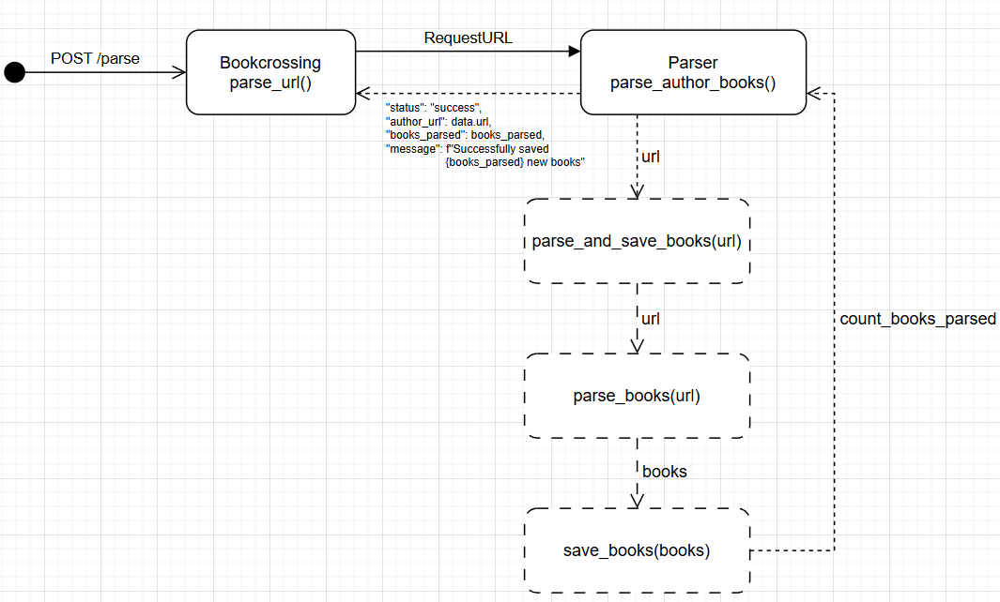

Лабораторная работа 3: Упаковка FastAPI приложения в Docker, Работа с источниками данных и Очереди
Цель
Упаковать FastAPI приложение в Docker.
Dokerfiles
Надо создать Dockerfile для упаковки FastAPI приложения и приложения с паресером. В Dockerfile указать базовый образ, установить необходимые зависимости, скопировать исходные файлы в контейнер и определить команду для запуска приложения.
Docker позволяет упаковать приложение и все его зависимости в единый контейнер, что обеспечивает консистентность среды выполнения и упрощает развертывание.
/app/Dockerfile
FROM python:3.9-slim
WORKDIR /app
ENV PYTHONPATH=/app
COPY requirements.txt .
RUN pip install --no-cache-dir -r requirements.txt
COPY . .
CMD ["uvicorn", "main:app", "--host", "0.0.0.0", "--port", "8000"]
/parser/Dockerfile
FROM python:3.11
WORKDIR /app
COPY requirements.txt .
RUN pip install --no-cache-dir -r requirements.txt
COPY ./app ./app
CMD ["uvicorn", "app.parser_app:app", "--host", "0.0.0.0", "--port", "8001"]
Docker Compose
docker-compose.yml нужен для управления оркестром сервисов, включающих FastAPI приложение, базу данных и парсер данных. Сюда же добавляются сервисы celery и redis.
Docker Compose упрощает управление несколькими контейнерами, позволяя запускать и настраивать все сервисы приложения, включая асинхронную обработку задач, с помощью одного файла конфигурации.
Закрепим понимание зависимостей системы:

services:
db:
image: postgres:17
container_name: db
environment:
POSTGRES_USER: ${DB_ADMIN}
POSTGRES_PASSWORD: ${DB_PASSWORD}
POSTGRES_DB: ${DB_NAME}
env_file:
- .env
ports:
- "5432:5432"
volumes:
- postgres_data:/var/lib/postgresql/data
healthcheck:
test: ["CMD-SHELL", "pg_isready -U postgres"]
interval: 5s
timeout: 5s
retries: 5
networks:
- bookcrossing_network
celery:
build:
context: ./parser
container_name: celery-worker
command: celery -A app.celery_tasks.celery_app worker --loglevel=info
depends_on:
- parser
- redis
- db
env_file:
- .env
networks:
- bookcrossing_network
redis:
image: redis:7
container_name: redis
ports:
- "6379:6379"
networks:
- bookcrossing_network
app:
build:
context: ./app
dockerfile: Dockerfile
container_name: app
ports:
- "8000:8000"
depends_on:
db:
condition: service_healthy
environment:
- DB_ADMIN=${DB_ADMIN}
- DB_PASSWORD=${DB_PASSWORD}
- DB_HOST=db
- DB_PORT=${DB_PORT}
- DB_NAME=${DB_NAME}
env_file:
- .env
volumes:
- ./app:/app/app
networks:
- bookcrossing_network
parser:
build:
context: ./parser
dockerfile: Dockerfile
container_name: parser
depends_on:
db:
condition: service_healthy
app:
condition: service_started
env_file:
- .env
volumes:
- ./parser:/app/parser
networks:
- bookcrossing_network
volumes:
postgres_data:
external: true
name: lr3_postgres_data
networks:
bookcrossing_network:
Docker Compose позволяет легко настроить и запустить Celery, Redis и FastAPI приложение как отдельные контейнеры, работающие в одной сети. Это упрощает управление зависимостями и конфигурацией всех компонентов системы.
вот такие дела!